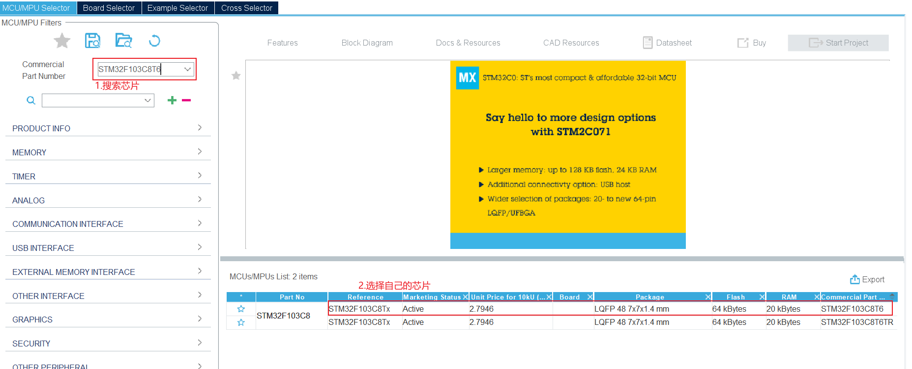
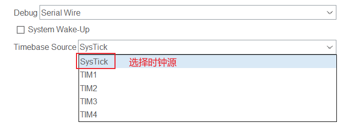
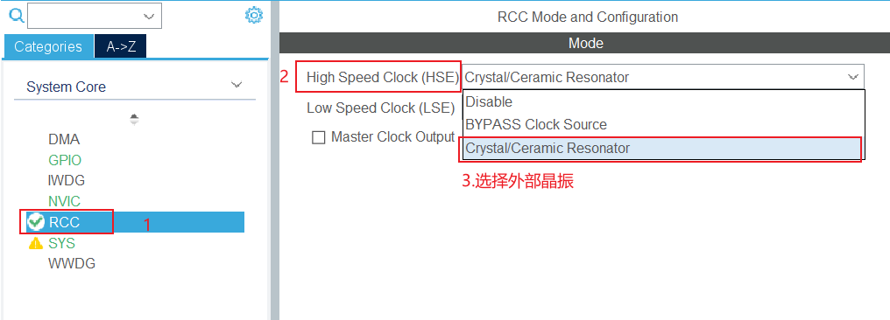
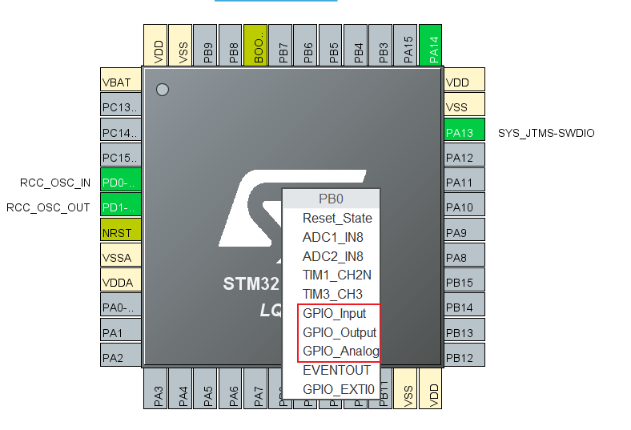
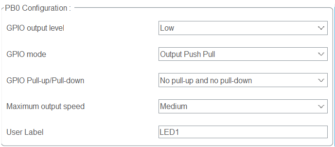
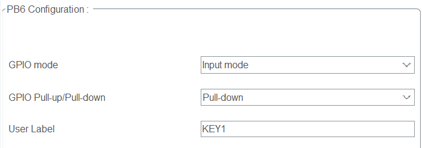
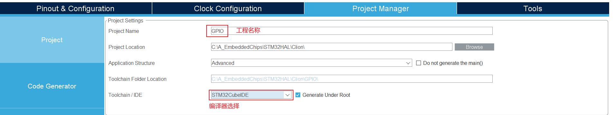
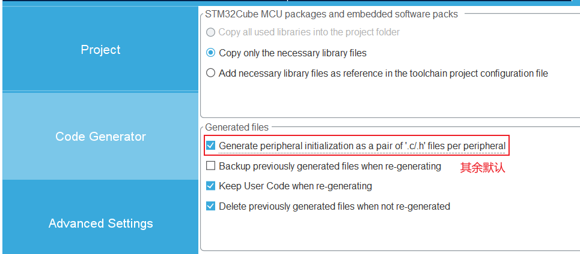

第一章 GPIO
1.1 GPIO模式理论介绍¶
| 模式名称 | 性质 | 特征 |
|---|---|---|
| 浮空输入 | 数字输入 | 可读取引脚电平，若引脚悬空，则电平不确定 |
| 上拉输入 | 数字输入 | 可读取引脚电平，内部连接上拉电阻，悬空时默认高电平 |
| 下拉输入 | 数字输入 | 可读取引脚电平，内部连接下拉电阻，悬空时默认低电平 |
| 模拟输入 | 模拟输入 | GPIO无效，引脚直接接入内部ADC |
| 开漏输出 | 数字输出 | 可输出引脚电平，高电平为高阻态，低电平接GND |
| 推挽输出 | 数字输出 | 可输出引脚电平，高电平接VDD，低电平接GND |
| 复用开漏输出 | 数字输出 | 由片上外设控制，高电平为高阻态，低电平接GND |
| 复用推挽输出 | 数字输出 | 由片上外设控制，高电平接VDD，低电平接GND |
1.2 GPIO模式对比与使用¶
| 模式名称 | 标准库 | HAL库（注1） | 使用场景 |
|---|---|---|---|
| 浮空输入 | GPIO_Mode_IN_FLOATING | GPIO_MODE_AF_INPUT | 调试或处理外部驱动信号（不常用） |
| 上拉输入 | GPIO_Mode_IPU | GPIO_MODE_INPUT | 按键检测，默认保持高电平 |
| 下拉输入 | GPIO_Mode_IPD | GPIO_MODE_INPUT | 按键检测或I2C输入引脚，默认低电平 |
| 模拟输入 | GPIO_Mode_AIN | GPIO_MODE_ANALOG | 传感器模拟信号接入（如ADC） |
| 开漏输出 | GPIO_Mode_Out_OD | GPIO_MODE_OUTPUT_OD | I²C总线，设备主动拉低电平（注2） |
| 推挽输出 | GPIO_Mode_Out_PP | GPIO_MODE_OUTPUT_PP | LED、蜂鸣器等，0、1 信号驱动的外设 |
| 复用开漏输出 | GPIO_Mode_AF_OD | GPIO_MODE_AF_OD | I2C通信，允许多个设备连接到总线（注3） |
| 复用推挽输出 | GPIO_Mode_AF_PP | GPIO_Mode_AF_PP | SPI、UART等外设，提供稳定的电平切换（注3） |
注1：
关于HAL和标准库的名称和配置区别：
C
GPIO_Mode_IN_FLOATING--|
GPIO_Mode_IPU |-----> GPIO_MODE_INPUT == GPIO_MODE_AF_INPUT
GPIO_Mode_IPD --|
实质上GPIO_MODE_AF_INPUT和GPIO_MODE_INPUT用的是同一个地址，仅仅宏定义的名称不同；而本质上它们的使用和原理也是一样的。
在HAL库中将GPIO数字输入模式均归到GPIO_MODE_INPUT一种模式，而上拉和下拉电阻需要单独配置：
C
#define GPIO_NOPULL 0x00000000u /*!< 既不上拉电阻，也不下拉电阻 */
#define GPIO_PULLUP 0x00000001u /*!< 上拉电阻 */
#define GPIO_PULLDOWN 0x00000002u /*!< 下拉电阻 */
// 配置方法
GPIO_InitTypeDef GPIO_InitStruct = {0}; // 将结构体的所有成员变量初始化为 0
__HAL_RCC_GPIOX_CLK_ENABLE(); // 开启GPIOX时钟,APB2总线
// -------------（省略若干配置）
GPIO_InitStruct.Pull = GPIO_NOPULL; // 既不上拉电阻，也不下拉电阻
HAL_GPIO_Init(GPIOX, &GPIO_InitStruct); // 初始化
这里配置还不完整，主要展示上拉和下拉电阻需要单独配置。
注2：
关于开漏输出只能驱动低电平，不驱动高电平：
驱动低电平：当引脚输出低电平时（0），它会将引脚与地（GND）相连，从而拉低输出信号线的电压。
不驱动高电平：当引脚输出高电平时（1），它不会主动提供高电压（如VDD），而是处于高阻抗（Hi-Z）状态。此时，信号线的电平由外部电路（例如一个上拉电阻）决定。
在开漏模式下，引脚的输出端类似于开关，这个开关的另一端接地。如果开关关闭（引脚输出低电平），引脚就接地，输出低电平；如果开关打开（引脚输出高电平），引脚断开（高阻态），信号线上的电平将由外部上拉电阻决定。
I²C总线使用场景：I²C协议使用开漏输出的方式，允许多个设备共享同一条数据线，并且通过上拉电阻将数据线拉高。每个设备可以主动拉低电平，但不会主动拉高，避免了设备之间的电平冲突。
显然，开漏输出主要利用低电平处理信号，可以避免高电平发生影响或出现电平冲突。
注3：
关于输出的复用与不复用的区别和使用场景：
-
复用模式与不复用的区别：
- 复用模式：GPIO引脚用于外设（如UART、SPI、I²C）控制，不再作为普通的GPIO引脚使用。通过配置为复用开漏或复用推挽模式，外设的信号控制引脚的电平输出。
- 非复用模式：GPIO引脚由用户程序直接控制，可以手动设置引脚为高电平或低电平，用于普通的输入输出操作。
-
使用场景的区别：
- 推挽 vs 开漏
- 推挽模式适合驱动单个设备，不需要担心电平冲突。
- 开漏模式适合多个设备共享数据线或与其他电压系统的设备通信。
- 复用 vs 不复用
- 复用模式适用于引脚被外设控制的场合（如I²C、SPI、UART等），这些引脚的状态由外设的信号决定。
- 非复用模式适用于普通的GPIO引脚，用户可以自由控制引脚的电平。
- 推挽 vs 开漏
1.3 STM32CubeMX配置¶
1.3.1 查找芯片¶

1.3.2 SYS配置¶


1.3.3 RCC配置¶

1.3.4 GPIO配置¶
GPIO一共三种可选GPIO_Input（数字输入）、GPIO_Output（数字输出）、GPIO_Analog（模拟输入）

PB0和PB1配置为LED1、LED2
- 默认低电平
- PB0和PB1均配置推挽输出
- 上拉或下拉电阻在输入模式使用，输出模式不配置
- 输出速度按需配置
- 用户标签，给引脚起别名，按需配置

PB6、PB7配置为KEY1、KEY2
- 输入模式
- 下拉电阻

1.3.5 时钟频率配置¶

1.3.6 工程配置¶


完成配置点击右上角生成工程